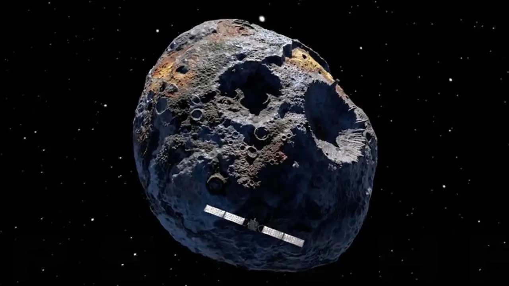
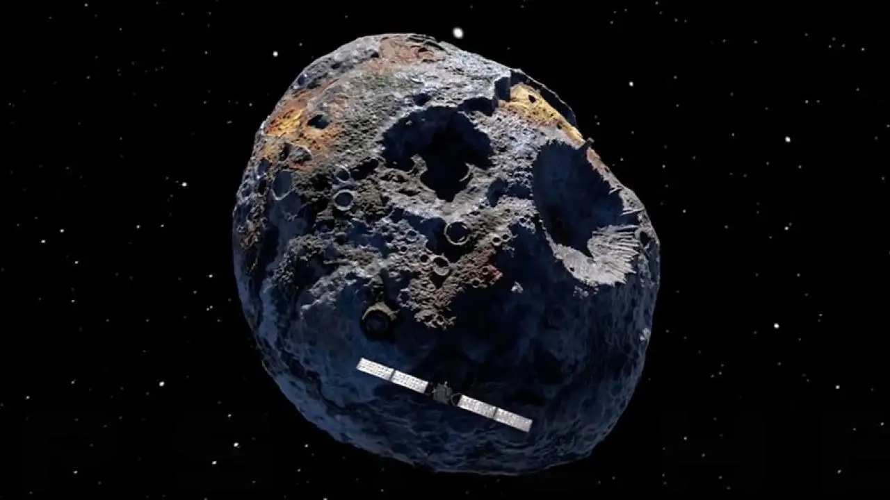
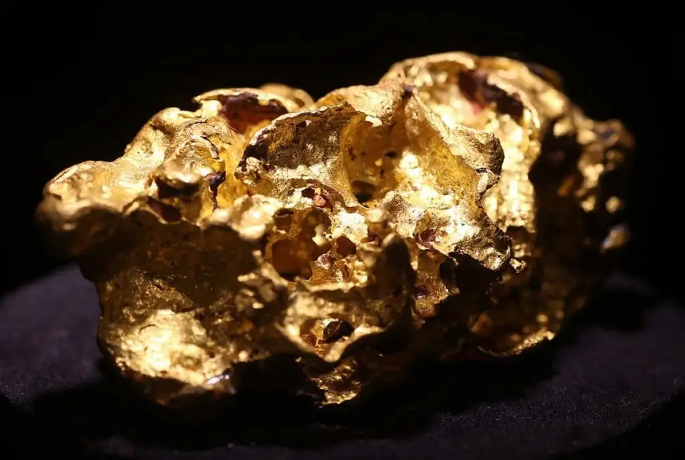

Lo suficiente como para colapsar la economía mundial

La NASA planea investigar Psyche, meteorito rico en oro y otros metales.
Probablemente te hayas preguntado cuánto oro queda en la Tierra, pero ¿alguna vez te has preguntado cuánto oro hay fuera de la Tierra?
Resulta que hoy sabemos de un asteroide gigante que contiene suficiente oro y otros metales para convertir a todos los terrícolas en multimillonarios. Además, con la NASA usando oro para proteger las naves espaciales de la radiación y otros múltiples usos electrónicos, la minería extraterrestre se convierte en una posibilidad real.
Le dicen Psyche
A diferencia de la mayoría de los asteroides rocosos y helados, el asteroide Psyche, ubicado entre Marte y Júpiter, contiene una veta madre de metal, que incluye oro, hierro y níquel. ¿Y el valor estimado de todo ese metal? Alrededor de $ 700 quintillones. Si ese dinero se distribuyera a todos los 7.600 millones de terrícolas, cada persona “minaría” unos 92.000 millones de dólares. Para poner eso en perspectiva, el tamaño de la economía de Hawái ascendía a 93.400 millones de dólares a finales de 2018. Está previsto que una nave espacial de la NASA sin tripulación se dirija a Psyche en 2022 para explorar el asteroide en forma de papa, que mide unas 140 millas de diámetro y se ubica como uno de los asteroides más grandes en la región del espacio conocida como cinturón de asteroides. La nave espacial llegará a Psyche el 31 de enero de 2026. Lindy Elkins-Tanton de la Universidad Estatal de Arizona (ASU) dijo que ella y su equipo “son uno de los grandes con un paso más cerca de descubrir los secretos de Psyche, un asteroide metálico misterioso y gigante, y eso significa mucho para nosotros”. Elkins-Tanton es el director de la Escuela de Exploración de la Tierra y el Espacio de ASU, que lidera la misión Psyche. Por cierto, no querrás empezar a gastar esos miles de millones de dólares de Psyche todavía. Un experto advierte que podríamos estar a décadas de extraer oro y otros metales preciosos en el espacio. La ciencia y la tecnología aún no están completamente desarrolladas. Aún así, Allied Market Research pronostica que el mercado de la minería de asteroides, sobre todo el diseño y la construcción de naves espaciales necesarias para llevar a cabo misiones mineras, podría acercarse a los $3,87 mil millones para 2025.
Según la NASA, el oro es un “recurso estratégico vital” en el espacio. Muchos satélites llevan láminas de mylar recubiertas de oro para protegerlos del calor solar. Mientras tanto, una fina capa de oro en la visera del casco de un astronauta desvía la radiación solar. Y la microelectrónica satelital que envía datos a todo el mundo depende de componentes de oro para garantizar un rendimiento confiable, resistente a la corrosión y libre de estática.
Oportunidad dorada y lunar
La luna no es tan estéril después de todo. Una misión de la NASA en 2009, en la que un cohete se estrelló contra la luna y una segunda nave espacial estudió la explosión, reveló que la superficie lunar contiene una serie de compuestos, que incluyen oro, plata y mercurio, según PBS.
A partir de 2020, una compañía de exploración espacial llamada Moon Express planea vuelos regulares a la luna en busca de oro y otros materiales raros por valor de billones de dólares, según el periódico The Sun.
Regresando a Tierra
Hay oro sobre la corteza terrestre, pero también debajo de ella. Hasta la fecha, se han descubierto alrededor de 244,000 toneladas métricas de oro, informa el Servicio Geológico de EE. UU. Puede que haya más oro para extraer, pero nadie puede estar seguro de cuánto oro queda ni de lo difícil que será excavar.
La cantidad de oro encontrada por los mineros se ha desplomado un 85 por ciento durante la última década, señala Bloomberg Market. En cuanto a la cantidad de oro que queda en la tierra, el Servicio Geológico de EE. UU. Estima que quedan alrededor de 57.000 toneladas por extraer. Compare eso con la cantidad de oro que ya se ha extraído y lo que le queda es un cubo de unos 6 metros de cada lado. Un cubo de ese tamaño tendría la altura de una jirafa adulta. No es de extrañar que se estén realizando esfuerzos para extraer oro del asteroide Psyche y de la luna. De todos los minerales que se extraen, ninguno es más útil que el oro, dice Geology.com. Esto se debe a que el oro conduce la electricidad, no se empaña, se puede combinar con otros metales, se puede fundir y moldear fácilmente y tiene un brillo destacable. Además del negocio de la joyería, el oro se utiliza en los campos de la electrónica, dental, médica, aeroespacial y de fabricación de vidrio, entre otros, según Geology.com. Y, por supuesto, se utiliza para fabricar monedas y barras de oro que conservan su atractivo comercial durante décadas, si no siglos.
Históricamente, el oro ha sido un vehículo a largo plazo para almacenar riqueza, una fuente terrenal de riqueza que está fuera de este mundo.
Cuánto oro hay en el espacio?
2022 Ago 17 indexLo suficiente como para colapsar la economía mundial

Probablemente te hayas preguntado cuánto oro queda en la Tierra, pero ¿alguna vez te has preguntado cuánto oro hay fuera de la Tierra?
Resulta que hoy sabemos de un asteroide gigante que contiene suficiente oro y otros metales para convertir a todos los terrícolas en multimillonarios. Además, con la NASA usando oro para proteger las naves espaciales de la radiación y otros múltiples usos electrónicos, la minería extraterrestre se convierte en una posibilidad real.
Le dicen Psyche
A diferencia de la mayoría de los asteroides rocosos y helados, el asteroide Psyche, ubicado entre Marte y Júpiter, contiene una veta madre de metal, que incluye oro, hierro y níquel. ¿Y el valor estimado de todo ese metal? Alrededor de $ 700 quintillones. Si ese dinero se distribuyera a todos los 7.600 millones de terrícolas, cada persona “minaría” unos 92.000 millones de dólares. Para poner eso en perspectiva, el tamaño de la economía de Hawái ascendía a 93.400 millones de dólares a finales de 2018. Está previsto que una nave espacial de la NASA sin tripulación se dirija a Psyche en 2022 para explorar el asteroide en forma de papa, que mide unas 140 millas de diámetro y se ubica como uno de los asteroides más grandes en la región del espacio conocida como cinturón de asteroides. La nave espacial llegará a Psyche el 31 de enero de 2026. Lindy Elkins-Tanton de la Universidad Estatal de Arizona (ASU) dijo que ella y su equipo “son uno de los grandes con un paso más cerca de descubrir los secretos de Psyche, un asteroide metálico misterioso y gigante, y eso significa mucho para nosotros”. Elkins-Tanton es el director de la Escuela de Exploración de la Tierra y el Espacio de ASU, que lidera la misión Psyche. Por cierto, no querrás empezar a gastar esos miles de millones de dólares de Psyche todavía. Un experto advierte que podríamos estar a décadas de extraer oro y otros metales preciosos en el espacio. La ciencia y la tecnología aún no están completamente desarrolladas. Aún así, Allied Market Research pronostica que el mercado de la minería de asteroides, sobre todo el diseño y la construcción de naves espaciales necesarias para llevar a cabo misiones mineras, podría acercarse a los $3,87 mil millones para 2025.
Según la NASA, el oro es un “recurso estratégico vital” en el espacio. Muchos satélites llevan láminas de mylar recubiertas de oro para protegerlos del calor solar. Mientras tanto, una fina capa de oro en la visera del casco de un astronauta desvía la radiación solar. Y la microelectrónica satelital que envía datos a todo el mundo depende de componentes de oro para garantizar un rendimiento confiable, resistente a la corrosión y libre de estática.
Oportunidad dorada y lunar
La luna no es tan estéril después de todo. Una misión de la NASA en 2009, en la que un cohete se estrelló contra la luna y una segunda nave espacial estudió la explosión, reveló que la superficie lunar contiene una serie de compuestos, que incluyen oro, plata y mercurio, según PBS.
A partir de 2020, una compañía de exploración espacial llamada Moon Express planea vuelos regulares a la luna en busca de oro y otros materiales raros por valor de billones de dólares, según el periódico The Sun.
Regresando a Tierra
Hay oro sobre la corteza terrestre, pero también debajo de ella. Hasta la fecha, se han descubierto alrededor de 244,000 toneladas métricas de oro, informa el Servicio Geológico de EE. UU. Puede que haya más oro para extraer, pero nadie puede estar seguro de cuánto oro queda ni de lo difícil que será excavar.
La cantidad de oro encontrada por los mineros se ha desplomado un 85 por ciento durante la última década, señala Bloomberg Market. En cuanto a la cantidad de oro que queda en la tierra, el Servicio Geológico de EE. UU. Estima que quedan alrededor de 57.000 toneladas por extraer. Compare eso con la cantidad de oro que ya se ha extraído y lo que le queda es un cubo de unos 6 metros de cada lado. Un cubo de ese tamaño tendría la altura de una jirafa adulta. No es de extrañar que se estén realizando esfuerzos para extraer oro del asteroide Psyche y de la luna. De todos los minerales que se extraen, ninguno es más útil que el oro, dice Geology.com. Esto se debe a que el oro conduce la electricidad, no se empaña, se puede combinar con otros metales, se puede fundir y moldear fácilmente y tiene un brillo destacable. Además del negocio de la joyería, el oro se utiliza en los campos de la electrónica, dental, médica, aeroespacial y de fabricación de vidrio, entre otros, según Geology.com. Y, por supuesto, se utiliza para fabricar monedas y barras de oro que conservan su atractivo comercial durante décadas, si no siglos.
Históricamente, el oro ha sido un vehículo a largo plazo para almacenar riqueza, una fuente terrenal de riqueza que está fuera de este mundo.

<<<